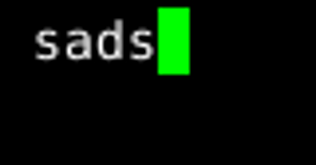

The sads Package: Species Abundance Distribution Selection |
 |
|---|
Written by: C. Strieder, P. I. K. L Prado, ...
Very much work in progress, planning to publish a first version soon.
Motivation: Inovations on Species Abundance Modeling.
Features:
install.packages("sads",repos="http://R-Forge.R-project.org")
Project links: